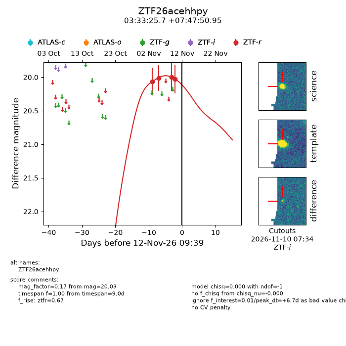
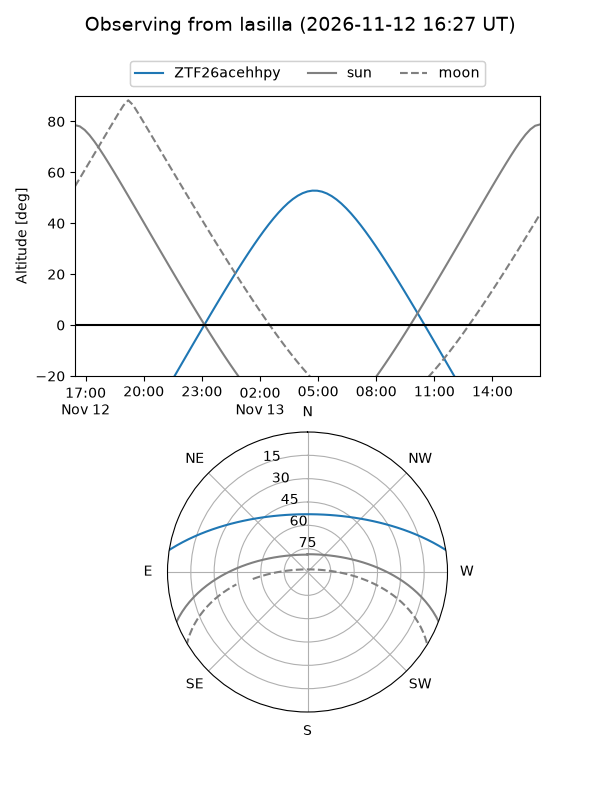
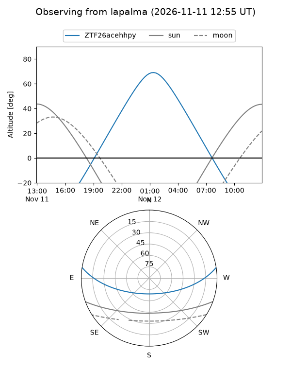
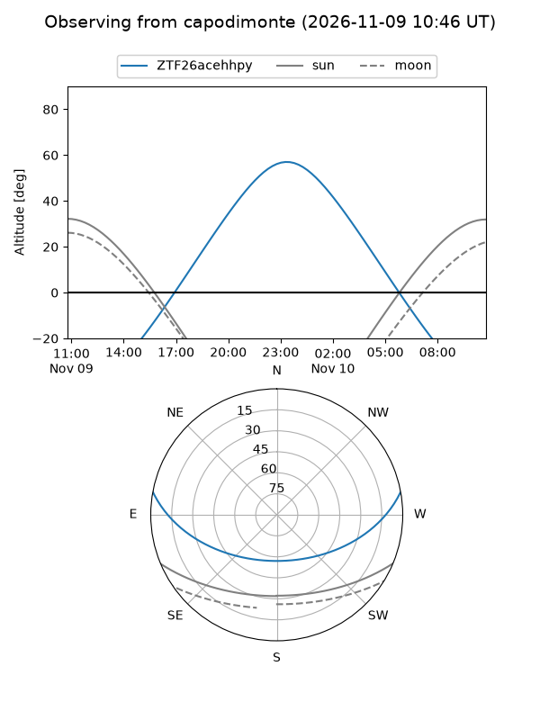
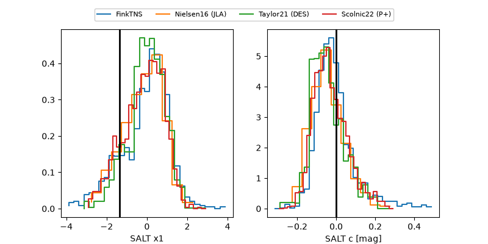

ZTF26acehhpy
Target ZTF26acehhpy at 2026-11-12 09:45
Aliases and brokers:
FINK-ZTF: ztf.fink-portal.org/ZTF26acehhpy
Lasair-ZTF: lasair-ztf.lsst.ac.uk/objects/ZTF26acehhpy
ALeRCE-ZTF: alerce.online/object/ZTF26acehhpy
Direct TNS query: direct search
alt names
ZTF26acehhpy (ztf,fink_ztf)
Coordinates:
equatorial (ra, dec) = 53.3572,+7.79749
equatorial (HMS+DMS) = 03:33:25.72,+07:47:50.95
galactic (l, b) = (177.1178,-37.49221)
Flags:
peak dt: +6.7
Photometry:
last ztfr=20.03
4 ztfr detections
Lightcurve

Visibility



Additional plots
